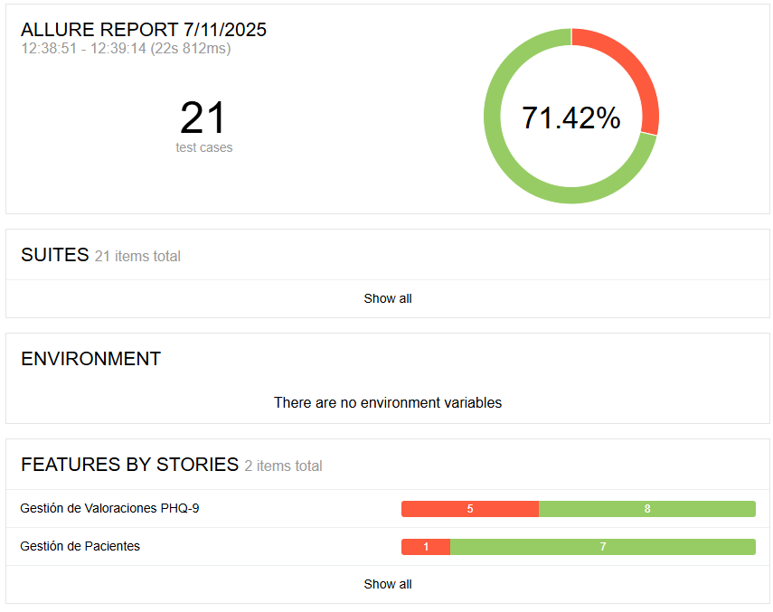
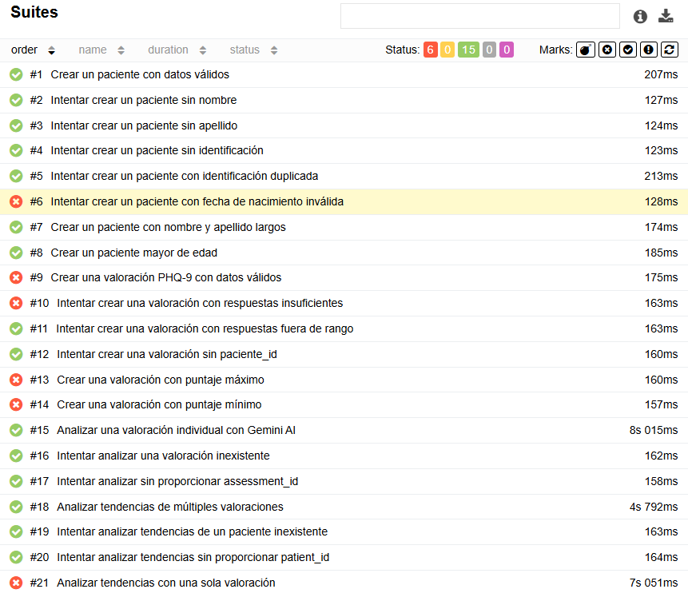
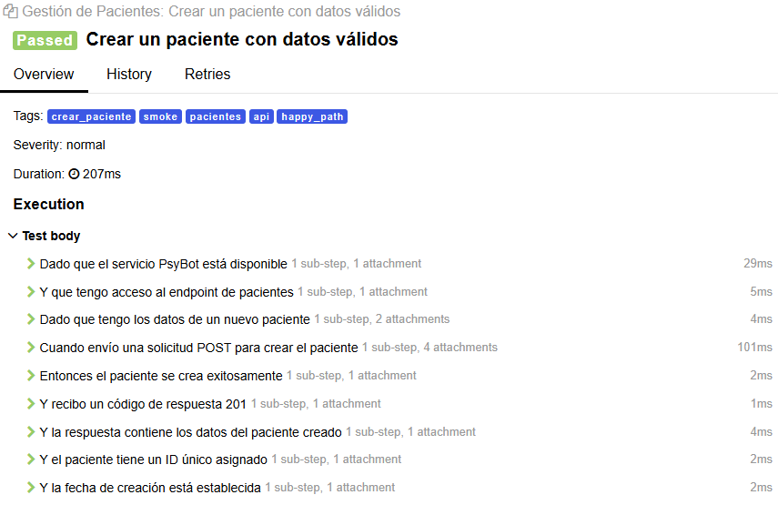
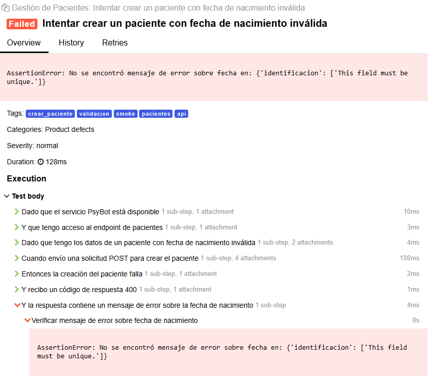
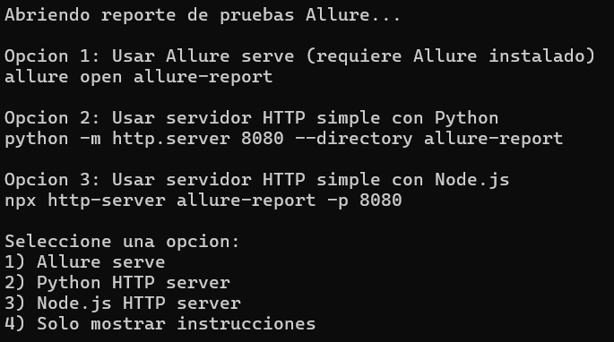

Desarrollo
¿Que es BDD?
BDD (Behavior Driven Development) es una metodología de desarrollo ágil centrada en el comportamiento del software desde la perspectiva del usuario final. Su objetivo es alinear el desarrollo técnico con los requerimientos del negocio mediante la colaboración entre desarrolladores, testers y stakeholders no técnicos. BDD se basa en describir funcionalidades en lenguaje natural estructurado (como “Dado, Cuando, Entonces”) para facilitar una comprensión compartida y generar automáticamente pruebas funcionales a partir de esos escenarios.
Tecnología elegida
- Gherkin
- Behave
- Allure
Escenarios críticos del sistema
Módulo Pacientes
- Crear pacientes con datos válidos
- Crear un paciente con nombre y apellido largos
- Crear una paciente mayor de edad
- Intentar crear un paciente con fecha de nacimiento inválida
- Intentar crear un paciente con identificación duplicada
- Intentar crear un paciente sin apellido
- Intentar crear un paciente sin identificación
- Intentar crear un paciente sin nombre
Módulo Valoraciones
- Analizar un valoración individual con Gemini AI
- Crear una valoración con puntaje máximo
- Crear una valoración con puntaje mínimo
- Crear un valoración PHQ-9 con datos válidos
- Intentar analizar sin proporcionar el assessment_id
- Intentar analizar tendencias de un paciente inexistente
- Intentar analizar tendencias sin proporcionar el paciente_id
- Intentar analizar una valoración inexistente
- Intentar crear una valoración con respuestas fuera de rango
- Intentar crear una valoración con respuestas insuficientes
- Intentar crear una valoración sin paciente_id
- Analizar tendencias con solo un valoración
- Analizar tendencias de múltiples valoraciones
Enlace al repositorio
En los siguientes enlaces se puede observar los folders del repositorio relacionados con la implementación de BDD:
Escenarios en formato Gherkin
crear_paciente.feature
# language: es
@pacientes @api @smoke
Característica: Gestión de Pacientes
Como psicólogo clínico
Quiero poder crear y gestionar pacientes en el sistema PsyBot
Para poder realizar seguimiento de sus valoraciones PHQ-9
Antecedentes:
Dado que el servicio PsyBot está disponible
Y que tengo acceso al endpoint de pacientes
@crear_paciente @happy_path
Escenario: Crear un paciente con datos válidos
Dado que tengo los datos de un nuevo paciente:
| nombre | apellido | identificacion | fecha_nacimiento |
| Juan | Pérez | 123456789 | 1990-05-15 |
Cuando envío una solicitud POST para crear el paciente
Entonces el paciente se crea exitosamente
Y recibo un código de respuesta 201
Y la respuesta contiene los datos del paciente creado
Y el paciente tiene un ID único asignado
Y la fecha de creación está establecida
@crear_paciente @validacion
Escenario: Intentar crear un paciente sin nombre
Dado que tengo los datos de un paciente sin nombre:
| apellido | identificacion | fecha_nacimiento |
| García | 987654321 | 1985-03-20 |
Cuando envío una solicitud POST para crear el paciente
Entonces la creación del paciente falla
Y recibo un código de respuesta 400
Y la respuesta contiene un mensaje de error sobre el nombre requerido
@crear_paciente @validacion
Escenario: Intentar crear un paciente sin apellido
Dado que tengo los datos de un paciente sin apellido:
| nombre | identificacion | fecha_nacimiento |
| María | 456789123 | 1992-08-10 |
Cuando envío una solicitud POST para crear el paciente
Entonces la creación del paciente falla
Y recibo un código de respuesta 400
Y la respuesta contiene un mensaje de error sobre el apellido requerido
@crear_paciente @validacion
Escenario: Intentar crear un paciente sin identificación
Dado que tengo los datos de un paciente sin identificación:
| nombre | apellido | fecha_nacimiento |
| Carlos | López | 1988-12-05 |
Cuando envío una solicitud POST para crear el paciente
Entonces la creación del paciente falla
Y recibo un código de respuesta 400
Y la respuesta contiene un mensaje de error sobre la identificación requerida
@crear_paciente @validacion
Escenario: Intentar crear un paciente con identificación duplicada
Dado que existe un paciente con identificación "555666777"
Y que tengo los datos de un nuevo paciente con la misma identificación:
| nombre | apellido | identificacion | fecha_nacimiento |
| Pedro | Martínez | 555666777 | 1995-01-25 |
Cuando envío una solicitud POST para crear el paciente
Entonces la creación del paciente falla
Y recibo un código de respuesta 400
Y la respuesta contiene un mensaje de error sobre identificación duplicada
@crear_paciente @validacion
Escenario: Intentar crear un paciente con fecha de nacimiento inválida
Dado que tengo los datos de un paciente con fecha de nacimiento inválida:
| nombre | apellido | identificacion | fecha_nacimiento |
| Ana | Rodríguez | 111222333 | 2025-12-31 |
Cuando envío una solicitud POST para crear el paciente
Entonces la creación del paciente falla
Y recibo un código de respuesta 400
Y la respuesta contiene un mensaje de error sobre la fecha de nacimiento
@crear_paciente @edge_cases
Escenario: Crear un paciente con nombre y apellido largos
Dado que tengo los datos de un paciente con nombres largos:
| nombre | apellido | identificacion | fecha_nacimiento |
| María Fernanda Alejandra Esperanza | González Rodríguez de la Torre y Mendoza | 999888777 | 1987-06-18 |
Cuando envío una solicitud POST para crear el paciente
Entonces el paciente se crea exitosamente
Y recibo un código de respuesta 201
Y la respuesta contiene los datos del paciente con nombres largos
@crear_paciente @edge_cases
Escenario: Crear un paciente mayor de edad
Dado que tengo los datos de un paciente mayor de edad:
| nombre | apellido | identificacion | fecha_nacimiento |
| Esperanza | Jiménez | 777666555 | 1940-04-12 |
Cuando envío una solicitud POST para crear el paciente
Entonces el paciente se crea exitosamente
Y recibo un código de respuesta 201
Y el paciente tiene más de 80 añosvaloraciones_phq9.feature
# language: es
@valoraciones @api @smoke
Característica: Gestión de Valoraciones PHQ-9
Como psicólogo clínico
Quiero poder crear valoraciones PHQ-9 y analizarlas con Gemini AI
Para realizar seguimiento del estado mental de mis pacientes
Antecedentes:
Dado que el servicio PsyBot está disponible
Y que tengo acceso al endpoint de valoraciones
Y que existe un paciente de prueba para las valoraciones
@crear_valoracion @happy_path
Escenario: Crear una valoración PHQ-9 con datos válidos
Dado que tengo los datos de una nueva valoración PHQ-9:
| respuesta1 | respuesta2 | respuesta3 | respuesta4 | respuesta5 | respuesta6 | respuesta7 | respuesta8 | respuesta9 |
| 2 | 1 | 3 | 2 | 1 | 2 | 1 | 0 | 0 |
Cuando envío una solicitud POST para crear la valoración
Entonces la valoración se crea exitosamente
Y recibo un código de respuesta 201
Y la respuesta contiene los datos de la valoración creada
Y la valoración tiene un ID único asignado
Y el total_score se calcula correctamente como 12
Y la fecha de creación está establecida
@crear_valoracion @validacion
Escenario: Intentar crear una valoración con respuestas insuficientes
Dado que tengo los datos de una valoración con 7 respuestas:
| respuesta1 | respuesta2 | respuesta3 | respuesta4 | respuesta5 | respuesta6 | respuesta7 |
| 2 | 1 | 3 | 2 | 1 | 2 | 1 |
Cuando envío una solicitud POST para crear la valoración
Entonces la creación de la valoración falla
Y recibo un código de respuesta 400
Y la respuesta contiene un mensaje de error sobre 9 respuestas requeridas
@crear_valoracion @validacion
Escenario: Intentar crear una valoración con respuestas fuera de rango
Dado que tengo los datos de una valoración con respuestas inválidas:
| respuesta1 | respuesta2 | respuesta3 | respuesta4 | respuesta5 | respuesta6 | respuesta7 | respuesta8 | respuesta9 |
| 2 | 1 | 3 | 5 | 1 | 2 | 1 | 0 | 0 |
Cuando envío una solicitud POST para crear la valoración
Entonces la creación de la valoración falla
Y recibo un código de respuesta 400
Y la respuesta contiene un mensaje de error sobre valores válidos
@crear_valoracion @validacion
Escenario: Intentar crear una valoración sin paciente_id
Dado que tengo los datos de una valoración sin paciente_id:
| respuesta1 | respuesta2 | respuesta3 | respuesta4 | respuesta5 | respuesta6 | respuesta7 | respuesta8 | respuesta9 |
| 2 | 1 | 3 | 2 | 1 | 2 | 1 | 0 | 0 |
Cuando envío una solicitud POST para crear la valoración
Entonces la creación de la valoración falla
Y recibo un código de respuesta 400
Y la respuesta contiene un mensaje de error sobre patient_id requerido
@crear_valoracion @edge_cases
Escenario: Crear una valoración con puntaje máximo
Dado que tengo los datos de una valoración con puntaje máximo:
| respuesta1 | respuesta2 | respuesta3 | respuesta4 | respuesta5 | respuesta6 | respuesta7 | respuesta8 | respuesta9 |
| 3 | 3 | 3 | 3 | 3 | 3 | 3 | 3 | 3 |
Cuando envío una solicitud POST para crear la valoración
Entonces la valoración se crea exitosamente
Y recibo un código de respuesta 201
Y el total_score se calcula correctamente como 27
@crear_valoracion @edge_cases
Escenario: Crear una valoración con puntaje mínimo
Dado que tengo los datos de una valoración con puntaje mínimo:
| respuesta1 | respuesta2 | respuesta3 | respuesta4 | respuesta5 | respuesta6 | respuesta7 | respuesta8 | respuesta9 |
| 0 | 0 | 0 | 0 | 0 | 0 | 0 | 0 | 0 |
Cuando envío una solicitud POST para crear la valoración
Entonces la valoración se crea exitosamente
Y recibo un código de respuesta 201
Y el total_score se calcula correctamente como 0
@analisis_individual @gemini @happy_path
Escenario: Analizar una valoración individual con Gemini AI
Dado que tengo una valoración PHQ-9 creada previamente con ID conocido
Cuando envío una solicitud POST para analizar la valoración individual
Entonces el análisis se genera exitosamente
Y recibo un código de respuesta 200
Y la respuesta contiene información del paciente
Y la respuesta contiene información de la valoración
Y la respuesta contiene un análisis clínico generado por Gemini
Y el análisis incluye interpretación clínica
Y el análisis incluye recomendaciones terapéuticas
@analisis_individual @validacion
Escenario: Intentar analizar una valoración inexistente
Dado que tengo un ID de valoración inexistente
Cuando envío una solicitud POST para analizar la valoración individual
Entonces el análisis falla
Y recibo un código de respuesta 400
Y la respuesta contiene un mensaje de error sobre valoración inexistente
@analisis_individual @validacion
Escenario: Intentar analizar sin proporcionar assessment_id
Dado que no proporciono un assessment_id
Cuando envío una solicitud POST para analizar la valoración individual
Entonces el análisis falla
Y recibo un código de respuesta 400
Y la respuesta contiene un mensaje de error sobre assessment_id requerido
@analisis_tendencias @gemini @happy_path
Escenario: Analizar tendencias de múltiples valoraciones
Dado que tengo múltiples valoraciones PHQ-9 para el mismo paciente
Cuando envío una solicitud POST para analizar las tendencias
Entonces el análisis de tendencias se genera exitosamente
Y recibo un código de respuesta 200
Y la respuesta contiene información del paciente
Y la respuesta contiene el número de valoraciones analizadas
Y la respuesta contiene datos de todas las valoraciones
Y la respuesta contiene un análisis de tendencias generado por Gemini
Y el análisis incluye evolución temporal
Y el análisis incluye interpretación de cambios
@analisis_tendencias @validacion
Escenario: Intentar analizar tendencias de un paciente inexistente
Dado que tengo un ID de paciente inexistente
Cuando envío una solicitud POST para analizar las tendencias
Entonces el análisis de tendencias falla
Y recibo un código de respuesta 400
Y la respuesta contiene un mensaje de error sobre paciente inexistente
@analisis_tendencias @validacion
Escenario: Intentar analizar tendencias sin proporcionar patient_id
Dado que no proporciono un patient_id
Cuando envío una solicitud POST para analizar las tendencias
Entonces el análisis de tendencias falla
Y recibo un código de respuesta 400
Y la respuesta contiene un mensaje de error sobre patient_id requerido
@analisis_tendencias @edge_cases
Escenario: Analizar tendencias con una sola valoración
Dado que tengo una sola valoración PHQ-9 para un paciente
Cuando envío una solicitud POST para analizar las tendencias
Entonces el análisis de tendencias se genera exitosamente
Y recibo un código de respuesta 200
Y la respuesta indica que hay 1 valoración analizada
Y el análisis incluye recomendaciones para seguimiento futuroPasos y comandos de ejecución
Paso 1 - Instalar dependencias
pip install behave==1.2.6
pip install allure-behave==2.13.2
pip install pytest-django==4.7.0
pip install requests==2.31.0Paso 2 - Crear estructura de directorios
mkdir -p tests/bdd/features/steps
mkdir -p tests/bdd/reports/allure-results
mkdir -p tests/bdd/reports/junitPaso 3 - Configurar behave.ini
# tests/bdd/behave.ini
[behave]
default_format = allure_behave.formatter:AllureFormatter
default_tags = -skip
junit = true
junit_directory = tests/bdd/reports/junit
paths = tests/bdd/features
show_skipped = false
show_timings = true
summary = true
stdout_capture = false
stderr_capture = false
log_capture = false
[behave.formatters]
allure = allure_behave.formatter:AllureFormatter
[behave.userdata]
allure_report_dir = tests/bdd/reports/allure-resultsPaso 4 - Crear environment.py
# tests/bdd/features/environment.py
import os
import requests
def before_all(context):
context.base_url = "http://localhost:8000"
context.headers = {
'Content-Type': 'application/json',
'Accept': 'application/json'
}
context.session = requests.Session()
context.session.headers.update(context.headers)
context.test_data = {}
def before_scenario(context, scenario):
context.response = None
context.response_data = None
context.status_code = NonePaso 5 - Crear el feature
# tests/bdd/features/mi_api.feature
# language: es
@api @smoke
Característica: Mi API
Como usuario
Quiero poder usar mi API
Para obtener datos
@happy_path
Escenario: Obtener datos básicos
Dado que el servicio está disponible
Cuando hago una petición GET a "/api/datos"
Entonces recibo código 200
Y la respuesta contiene datos válidosPaso 6 - Crear step definition
# tests/bdd/features/steps/mi_api_steps.py
from behave import given, when, then
import requests
import json
@given('que el servicio está disponible')
def step_servicio_disponible(context):
# Verificar que el servicio responde
response = requests.get(f"{context.base_url}/health/")
assert response.status_code == 200
@when('hago una petición GET a "{endpoint}"')
def step_peticion_get(context, endpoint):
context.response = context.session.get(f"{context.base_url}{endpoint}")
context.status_code = context.response.status_code
@then('recibo código {expected_code:d}')
def step_verificar_codigo(context, expected_code):
assert context.status_code == expected_code
@then('la respuesta contiene datos válidos')
def step_verificar_datos(context):
context.response_data = context.response.json()
assert context.response_data is not NonePaso 7 - Ejecutar pruebas
cd tests/bdd
behavePaso 8 - Ver Reportes con Allure
# Instalar Allure (si no lo tienes)
npm install -g allure-commandline
# Generar reporte HTML
allure serve tests/bdd/reports/allure-resultsEvidencia de ejecución
Dashboard de pruebas

Resumen de pruebas ejecutadas

Ejemplo de prueba exitosa

Ejemplo de prueba fallida

Reporte completo de pruebas
Para ejecutar el reporte completo de pruebas, descargue el siguiente zip, luego ejecute el archivo open-report y siga las instrucciones.
Opciones de ejecución:
